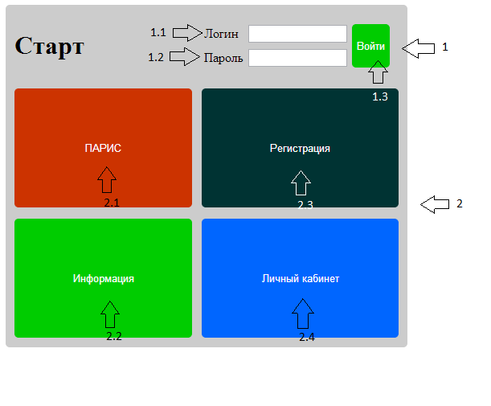

Начальная старница.

Список рабочих областей и описания их краткого назначения:
1. Область авторизации - рабочая область, благодаря которой вы можете получить доступ к персональным выводам, полученным вами ранее.
1.1 Логин - область, в которую пользователь вводить уникальное имя.
1.2. Пароль - область, для введения пароля.
1.3. Войти - кнопка, по которой происходит вход.
2. Область выбора - содержит кнопки с основной информацией о системе.
2.1. Парис - кнопка доступа к системе проводнику по ТРИЗ.
2.2. Регистрация - кнопка, открывающая регистрацию.
2.3. Информация - хранит информацию о системе.
2.4. Личный кабинет - предоставляет доступ к персональным данным.